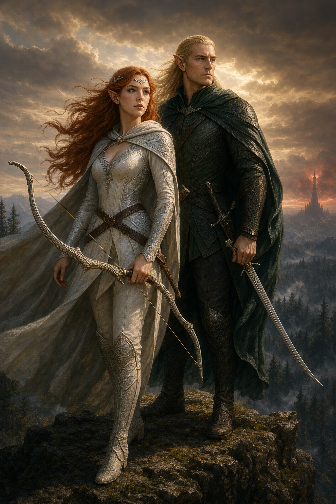
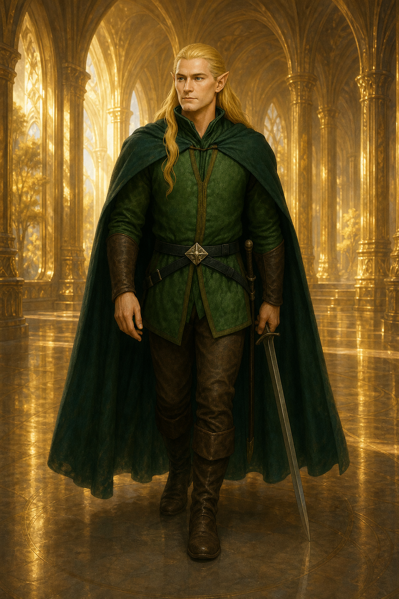
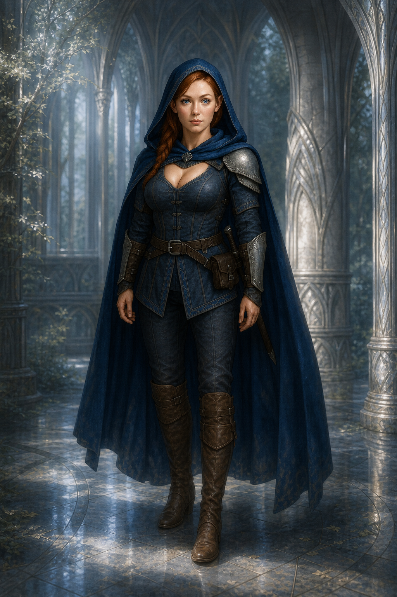
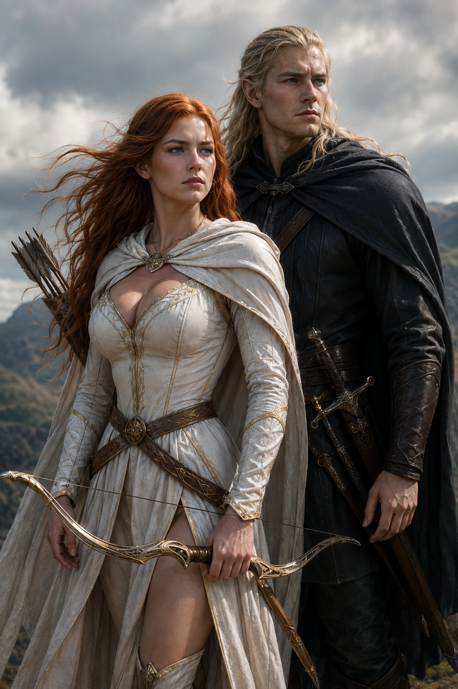

Herança
Filho de Thundril, criado entre duas pátrias e herdeiro de uma linhagem de guardiões.

Ele deixou a luz do Oeste duas vezes. Na primeira, por seu povo. Na segunda, pelo presságio das sombras — e por um amor que jamais deixou a Terra-média.
Antes de conhecer as sombras da Floresta Negra, Noada foi moldado pela luz antiga do Oeste.
Filho de Thundril e irmão de Legolas, Noada nasceu em Valinor, onde cresceu entre os Altos Elfos e aprendeu que poder sem sabedoria é apenas outra forma de ruína. Seus mestres lhe ensinaram as línguas antigas, a leitura dos astros e uma magia que não dominava a natureza — conversava com ela.
Nas forjas élficas recebeu suas lâminas: espadas antigas, equilibradas como pensamento e resistentes como uma promessa. Elas não eram simples armas, mas relíquias de uma era luminosa, feitas para reconhecer a mão de quem lutasse não por glória, mas pela preservação do mundo.
Quando a Terra-média precisou dele, Noada abandonou a paz de Valinor e retornou à sua verdadeira casa: a Floresta Negra. Ali se reuniu a Thundril e Legolas, defendendo o reino até que a era das grandes batalhas chegasse ao fim.
Filho de Thundril, criado entre duas pátrias e herdeiro de uma linhagem de guardiões.
Irmão de Legolas, unido a ele pela floresta, pelo arco e pelo dever.
Lâminas forjadas pelos Altos Elfos de Valinor para enfrentar as sombras das eras.


Irmã de Tauriel e aprendiz de Galadriel, Eira cresceu entre a disciplina dos guardiões e os mistérios de uma magia mais antiga que os reinos. Sua força nunca esteve apenas no arco ou na espada, mas na capacidade de perceber aquilo que se escondia além do olhar.
Antes de Noada regressar a Valinor, os dois compartilharam um amor marcado por silêncios, despedidas e promessas nunca inteiramente pronunciadas. A passagem dos anos não o apagou; apenas o transformou em memória viva.
Quando uma presença maligna voltou a tocar a Terra-média, Eira sentiu a sombra antes que os primeiros sinais fossem compreendidos. E, como se os destinos de ambos ainda estivessem ligados, Noada também a sentiu do outro lado do mar.
“Alguns amores aguardam. Outros atravessam eras inteiras para encontrar novamente o caminho de casa.”
Memórias de Valinor, do luar da Floresta Negra e da guerra que os chamou outra vez.

A visão despertará ao entrar na tela
Depois que a era passou, Noada voltou para Valinor. Mas a paz não duraria para sempre. Quando Sauron retornou e sua presença voltou a contaminar o mundo, Noada atravessou o mar uma segunda vez — para defender a Floresta Negra, reencontrar sua família e voltar àquela que seu coração jamais abandonara: Eira Elenwë.